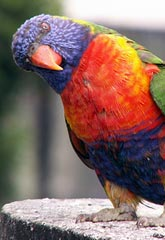
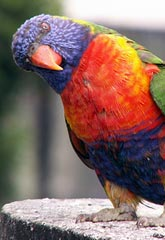
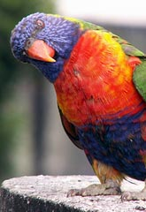

Aves de Australia. De izquierda a derecha, Kookburra, Pelican y Lorikeet Arco Iris. Originales de
Richard Clark

 
Aves de Australia. De izquierda a derecha, Kookburra, Pelican y Lorikeet Arco Iris. Originales de Richard Clark

Aves de Australia. De izquierda a derecha, Kookburra, Pelican y Lorikeet Arco Iris. Originales de Richard Clark